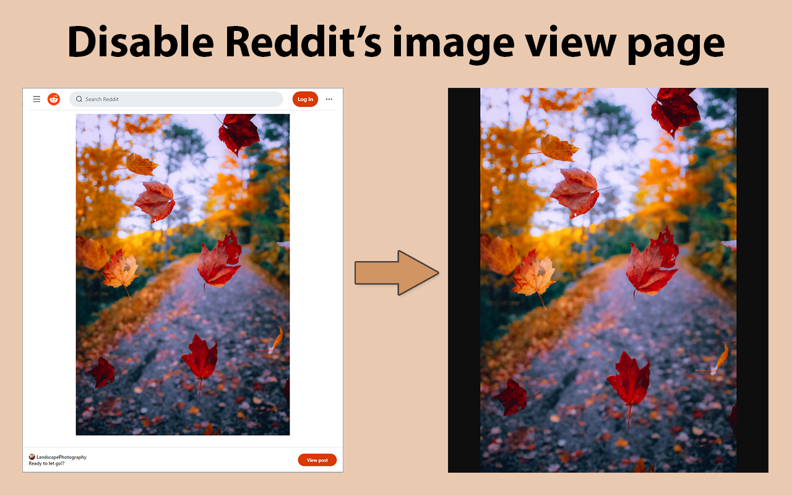

The latest update to Reddit Image Opener allows for disabling Reddit's image view page.
This functionality works regardless if an image is opened with the "Open Image" button or from within a post.
The feature is turned on by default. To toggle, go to the extension's settings in Chrome and check/uncheck the "Disable Reddit's image view page" option.
